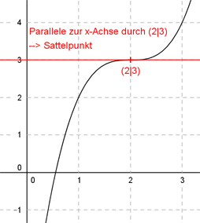

Aufgabe 50 Wie lautet die Funktionsgleichung einer Funktion 3. Grades der Form f(x) = x3 - ax2 + bx + c, wenn sie einen Wendepunkt bei (2|3) und dort eine Tangente parallel zur x-Achse hat?  Funktion 3. Grades: f(x) = x3 - ax2 + bx + c f’(x) = 3x2 - 2ax + b f’’(x) = 6x - 2a 3 Bedingungen: 1. Hat einen Wendepunkt bei (2|3) bedeutet zum einen: f(2) = 3 --> 23 + a * 22 + b * 2 + c = 0 --> 8 - 4a + 2b + c = 3 I 2. Hat einen Wendepunkt bei (2|3) bedeutet zum anderen: f’’(2) = 0 --> 6 * 2 - 2a = 0 --> 12 - 2a = 0 |+2a --> 2a = 12 |:2 --> a = 6 3. Hat eine Parallele zur x-Achse durch den Wendepunkt bedeutet:(a = 6 eingesetzt): f’(2) = 3 * 22 - 2 * 6 * 2 + b = 0 --> 12 - 24 + b = 0 --> -12 + b = 0 |+12 --> b = 12 a = 6 und b = 12 in I eingesetzt: 8 - 4 * 6 + 2 * 12 + c = 3 8 - 24 + 24 + c = 3 c + 8 = 3 |-8 c = -5 Gesuchte Funktionsgleichung: f(x) = x3 - 6x2 + 12x - 5